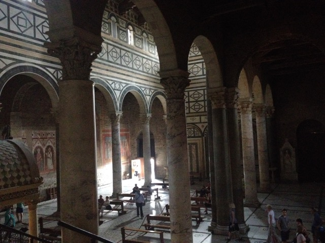

Sketch of the Florence Dome and bell tower, seen from San Miniato
Arriving at Florence on monday was a relief after dealing with the business and heat of Rome for two weeks. Although the city seems quieter and more peaceful than Rome in the present day, Florence has quite a bit of turmoil in its history. Florence was at almost continuous warfare with its rival city Pisa, and would occasionally be put under siege by Milan. Within the city itself, the Medicis would certainly stir up trouble and occasionally be run out of the city.
San Miniato
The first site we visited in Florence was the Church of San Miniato, located on the top of a hill across the Arno river from the main city center. What stood out to me the most about the Facade of the church was the use of different colors of marble to create patterns. in the facade of the church. Before we had seen patterns made by different colors of marble inlaid in floors, but generally only white marble was used for the facade. This is probably the result of the presence of a marble quarry nearby that has green marble. This same green marble is used in many other famous structures around Florence, including the baptistry, cathedral, and bell tower. The gold on the facade also stands out, which we learned is evidence of Byzantine influence.
The main nave of San Miniato
Facade of San Miniato.
Sketch of patterns repeated on floor inside San Miniato.

View from second level into main nave in San Miniato.